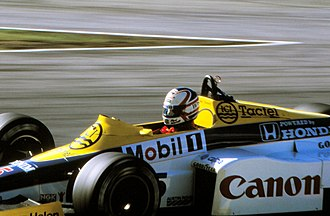

Formula 1 World Championship Career

- Active years 1980-1992. 1994- 1995
- Teams Lotus, Williams, Ferrari, McLaren
- Entries 192(187 starts)
- Championship 1 (1992)
- Wins 31
- Podiums 59
- Career points 480
- Pole positions 59
- Fastest laps 30
- First race 1980 Austrian Grand Prix
- First win 1985 European Gran Prix
- Last win 1994 Australian Grand Prix
- Last race 1995 Spanish Grand Prix